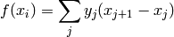

PyWENO contains a symbolic module to help authors develop their own WENO methods and/or explore the basics of WENO methods. Below are a few quick examples demonstrating how the symbolic routines of PyWENO are used.
First, let’s build some grid points and y-values:
>>> import sympy
>>> import pyweno.symbolic
>>> (x0, x1, x2) = sympy.var('x0 x1 x2')
>>> (y0, y1, y2) = sympy.var('y0 y1 y2')
Then, the polynomial that interpolates the points (x0, y0), (x1, y1), and (x2, y2) is given by:
>>> p = pyweno.symbolic.polynomial_interpolator([x0, x1, x2], [y0, y1, y2])
>>> p
y0*(x - x1)*(x - x2)/((x0 - x1)*(x0 - x2)) + y1*(x - x0)*(x - x2)/((x1 - x0)*(x1 - x2)) + y2*(x - x0)*(x - x1)/((x2 - x0)*(x2 - x1))
and is a function of the SymPy variable x. For example:
>>> x = sympy.var('x')
>>> p.subs(x, x2)
y2
The polynomial that interpolates the primitive function of f such that

is given by:
>>> P = pyweno.symbolic.primitive_polynomial_interpolator([x0, x1, x2], [y1, y2])
>>> P
y1*(x - x0)*(x - x2)/(x1 - x2) + (x - x0)*(x - x1)*(y1*(x1 - x0) + y2*(x2 - x1))/((x2 - x0)*(x2 - x1))
and is also a function of the SymPy variable x. For example:
>>> P.subs(x, x1)
y1*(x1 - x0)
For uniform grids, one could define the grid points by:
>>> (x, dx) = sympy.var('x dx')
>>> xs = [ dx, 2*dx, 3*dx ]
>>> p = pyweno.symbolic.polynomial_interpolator(xs, [y0, y1, y2])
>>> p
y0*(x - 3*dx)*(x - 2*dx)/(2*dx**2) + y2*(x - dx)*(x - 2*dx)/(2*dx**2) - y1*(x - dx)*(x - 3*dx)/dx**2
Hereafter we assume that the grid is uniform.
The reconstruction coefficients for a 5th (=2k-1 where k=3) order WENO scheme corresponding to the reconstruction point at the left side of each grid cell are given by:
>>> c = pyweno.symbolic.reconstruction_coefficients(3, 'left')
>>> c
array([[11/6, -7/6, 1/3],
[1/3, 5/6, -1/6],
[-1/6, 5/6, 1/3]], dtype=object)
Note that the return value c is a NumPy array of SymPy objects, indexed according to c[r,j] where r is the left-shift of the stencil.
The optimal weights for a 5th (=2k-1 where k=3) order WENO scheme corresponding to the reconstruction point at the left side of each grid cell are given by:
>>> w = pyweno.symbolic.optimal_weights(3, 'left')
>>> w
[1/10, 3/5, 3/10]
Note that the return value w is a Python list of SymPy objects, and is indexed according to w[r] where r is the left-shift of the stencil.
The Jiang-Shu smoothness coefficients for a 5th (=2k-1 where k=3) order WENO scheme are given by:
>>> beta = pyweno.symbolic.jiang_shu_smoothness_coefficients(3)
The return value beta is a NumPy array of SymPy objects, and is indexed according to beta[r,m,n] (see the reference documentation for details).